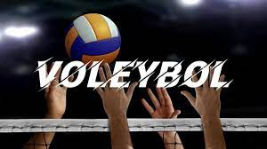

Amerika’lı beden eğitimi öğretmeni William G.Morgan tarafından 1895’te kurgulandı ve kapalı alan sporu olarak oynanmaya başlandı. Oyunun adı; topa yere değmeden vurma ilkesinden (vole) yola çıkarak “voleybol” olarak konuldu ve bu adla tanındı.
Birçok spor hem kadınlar hem de erkekler tarafından yapılabilmektedir. Bu sporlardan biriside voleyboldur. Profesyonel olarak yapılabilen voleybolu amatör olarak yapan kişilerde oldukça çoktur. Özellikle okul hayatı boyunca neredeyse herkes voleybol oynamıştır. Zaten bu yüzden çok sevilen bir spor olmayı başarmıştır. Futbol ve basketbol kadar voleybolunda ilgi çekici bir spor olduğunu söyleyebiliriz..
Amerika'da kısa sürede ilgi toplayan ve sevilen voleybol, I.Dünya Savaşı sırasında Amerika’lı askerler aracılığıyla Avrupa ile de tanıştı. Voleybolun farklı birçok ülkede, uzun bir süre bağımsız bir çizgide gelişmesinden sonra,1947’de Paris’te Uluslararası Voleybol Federasyonu (FIVB) kuruldu. İlk dünya şampiyonası 1949 yılında erkekler, 1952’de ise kadınlar tarafından oynanmıştır. Günümüzde, merkezi İsviçre’nin Lozan kentinde bulunan FIVB‘ye 160’tan fazla ülke üyedir.
| İsim | Şampiyonluk |
| Mireya Luis | 10 |
| Regla Torres | 10 |
| Yevgeniya Artamonova | 8 |
| Helia Souzat | 7 |
| Sheilla Castro | 6 |
| Kübra Akman | 5 |